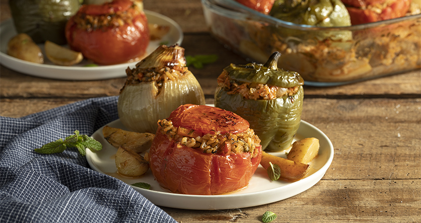

Gemista Recipe!
Home

Description
Gemista, which means "filled with," is a classic Greek dish featuring vegetables like tomatoes, peppers, and sometimes zucchini or eggplants, stuffed with a savory mixture of rice, herbs, and aromatics. Baked until tender and caramelized, these stuffed vegetables are a healthy and delicious meal, often served with a side of feta cheese and crusty bread to soak up the flavorful tomato juices from the pan.
Ingredients
Vegetables & Filling
- Vegetables: 4 large tomatoes, 4 bell peppers
- Rice: 1 cup short-grain rice
- Herbs: Fresh parsley, mint, and dill
- Aromatics: 1 onion, 1 clove garlic, olive oil
Sauce & Extras
- Potatoes: 2-3 medium potatoes, cut into wedges
- Tomato puree: 1 cup
- Seasoning: Salt, pepper, sugar
Steps
- Prep veggies: Cut the tops off tomatoes and peppers, scoop out the flesh, and keep it.
- Make filling: Sauté onion and garlic, add the chopped tomato flesh, rice, herbs, and spices. Cook slightly.
- Stuff: Fill the vegetables with the rice mixture and place them in a baking dish.
- Add potatoes: Add potato wedges between the stuffed vegetables.
- Bake: Pour tomato puree and olive oil over everything and bake at 180°C for about an hour until the rice is cooked and veggies are soft.